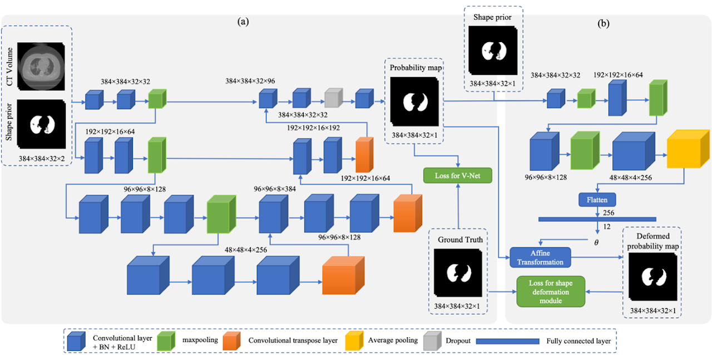
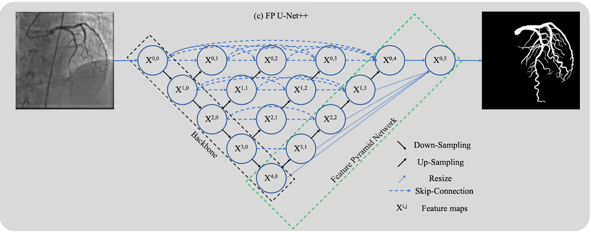
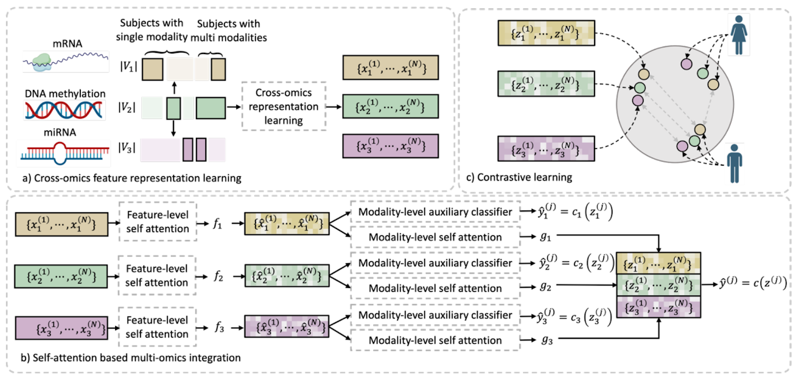
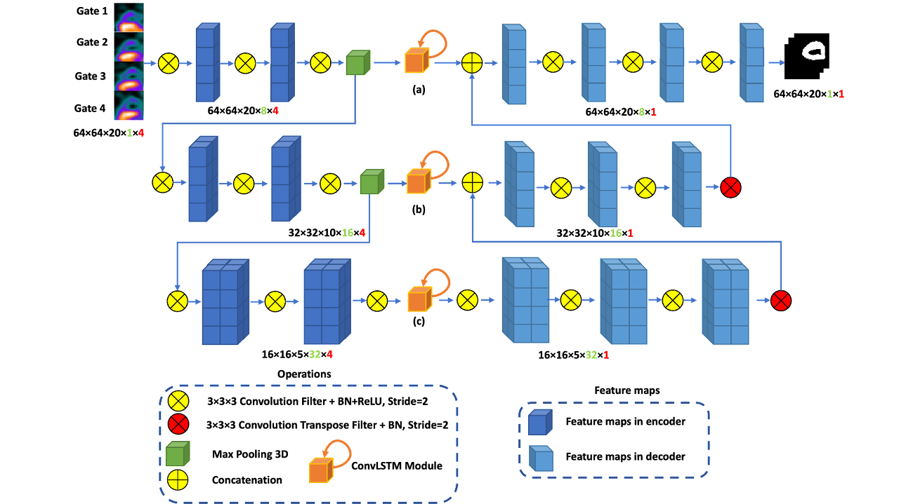

Graph matching for coronary artery semantic labeling
- An association graph-based graph-matching network is proposed to build the semantic correspondence from different individual graphs so as to perform coronary artery semantic labeling
- This study presents the first study for coronary artery semantic labeling on invasive coronary angiography using deep learning

Image segmentation using shape prior
- A new deep-learning-based method that integrates a 3D V-Net with shape priors is proposed to extract pulmonary parenchyma from chest CT images
- An unsupervised learning strategy is proposed to learn the parameters of the rigid deformation to deform the shape priors to the medical object for segmentation

Multiscale medical image segmentation
- By integrating the feature maps from the different levels of the U-Net++, the proposed feature pyramid U-Net++ (FP U-Net++) trained with the designed loss function demonstrated powerful performance for medical image segmentation
- A streamlined algorithm for the detection of arterial stenosis was proposed

Multiview information integration
- Integration of heterogeneous and high-dimensional multi-omics data is becoming increasingly important in understanding genetic data
- A deep learning method for multi-omics integration with incomplete data by Cross-omics Linked unified embedding with Contrastive Learning and Self Attention (CLCLSA) is proposed

Sequential image analysis
- A new deep-learning-based method which integrates a 3D V-Net with convolutional long short-term memory is proposed to extract the right ventricle (RV) using 4-dimensional gated myocardial perfusion single-photon emission computed tomography (MPS)
- A deep learning method for multi-omics integration with incomplete data by Cross-omics Linked unified embedding with Contrastive Learning and Self Attention (CLCLSA) is proposed